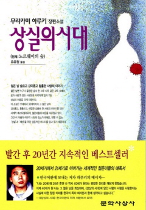
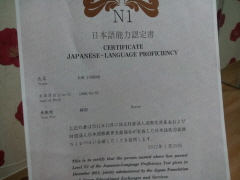
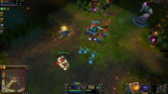
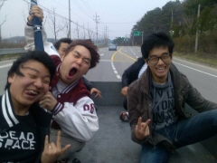
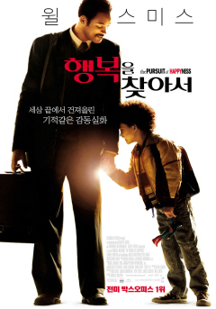

-
가족
제 아빠와 동생입니다. 동생이 입대하는 날 찍은겁니다. 지금은 자대로 가서 열심히 하는 중입니다. 엊그제 간 것 같은데 벌써 일병입니다. 역시 다른사람의 군생활은 빨리 가나봅니다.등록일: 2012.10.08
-

상실의 시대
'상실의 시대'라는 책입니다. 제가 가장 좋아하는 작가 '무라카미 하루키'가 썼죠. 방황하는 청춘을 너무나도 서정적이고 멋지게 표현한 책입니다. 너무 감명깊게 읽은 책이라 원서도 볼려고 일어까지 배웠습니다.등록일: 2012.10.02
-

자격증
상실의 시대를 보면서 일어를 처음 배우게 되었습니다. 어려운 한자가 많았지만 한글과 비슷한 점이 많아서 쉽게 익혔습니다. 첫 시험에 도전했을 때는 떨어졌지만 두 번째 시험에선 합격했습니다.등록일: 2012.09.27
-

게임
요즘 한창 유행하는 게임 '리그오브레전드'입니다. 자신의 케릭터를 키워서 적군의 기지를 점령하는 게임입니다. 공부도 해야하는데.. 너무 재밌습니다.등록일: 2012.09.22
-

친구들
동아리에서 친구들과 같이 엠티를 갔을 때입니다. 새로 가입한 신입생들과 같이 놀았습니다. 게임도 하고 맛있는 고기도 먹고 즐거웠습니다.등록일: 2012.09.08
-

영화
윌스미스 주연의 '행복을 찾아서(happyness)'라는 영화입니다. 각박한 현실에서도 노력하는 사람이 꿈을 이룬다는 내용입니다. Happyness의 'y' 'why?' 행복을 왜 찾아야 하는가? 그 물음에 대한 답은 Happiness의 'i' 바로 자기 자신에게 있을 것입니다.등록일: 2012.08.30
-
 공부
학기 중에도 틈틈이 토익 공부를 하는 중입니다. 매번 바쁘다는 핑계로 작심삼일이 되어버렸지만 이번엔 확실히 할 겁니다. 올해 안으로 목표점수인 750점을 꼭 넘을겁니다.등록일: 2012.08.24
공부
학기 중에도 틈틈이 토익 공부를 하는 중입니다. 매번 바쁘다는 핑계로 작심삼일이 되어버렸지만 이번엔 확실히 할 겁니다. 올해 안으로 목표점수인 750점을 꼭 넘을겁니다.등록일: 2012.08.24 -
좋아하는 음식
저는 피자를 매우 좋아합니다. 칼로리가 높고 기름진 음식이라 몸에 썩 좋지는 않지만 가끔씩 정말 시켜먹고 싶을 때가 있습니다.등록일: 2012.08.17
-
존경하는 인물
스티브 잡스의 자서전을 읽고 그를 존경하게 되었습니다. 애플의 창업자이며, 매킨토시, 아이폰, 등을 선보였습니다. 애인과 딸과의 불화, 모순된 성격으로 외면받는 시기도 있었지만 it업계에 큰 획을 그은 굴지의 ceo입니다.등록일: 2012.08.12